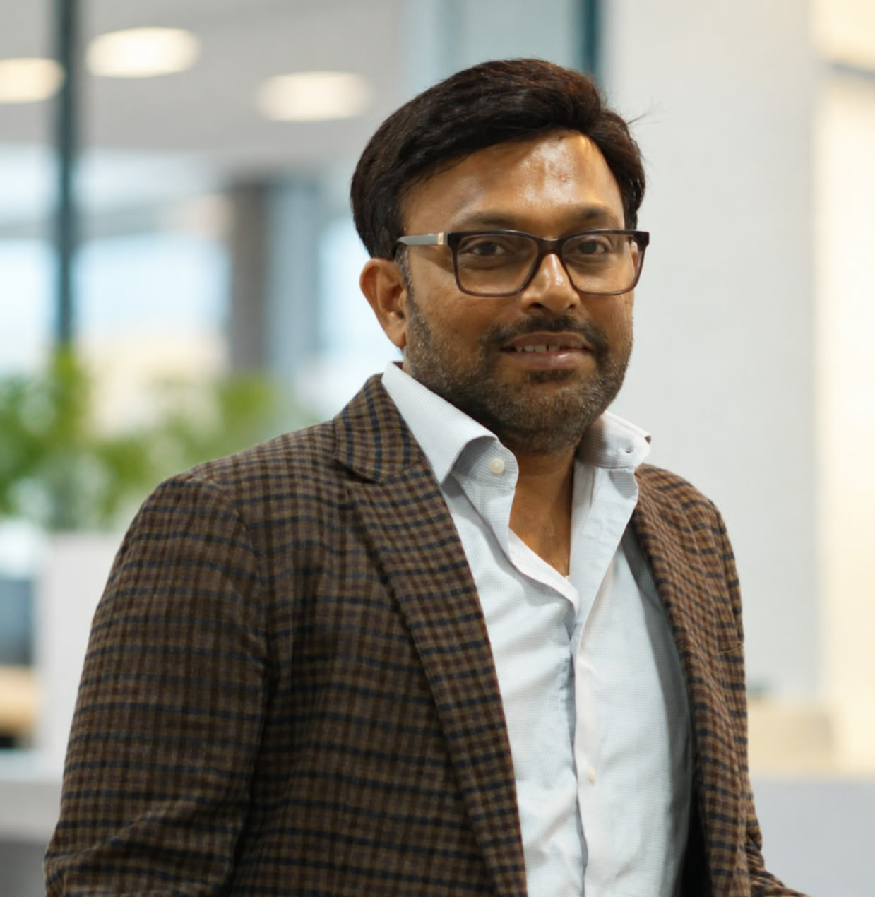
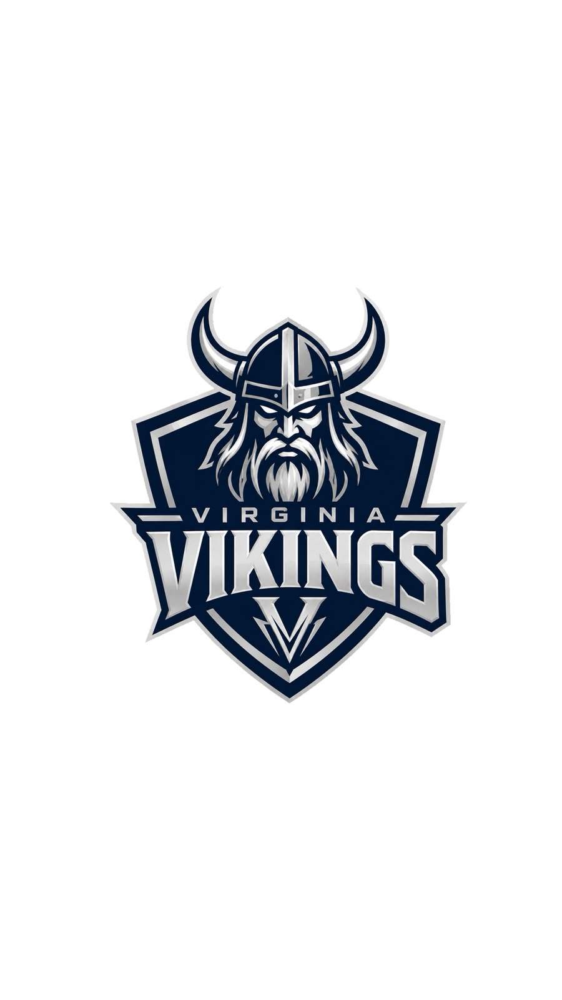
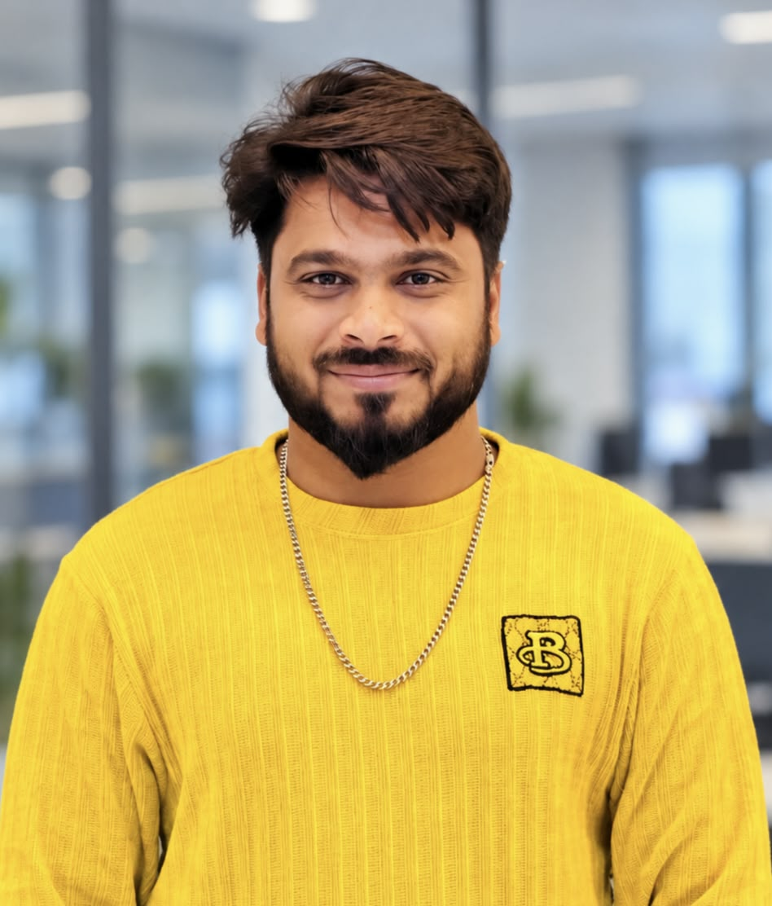
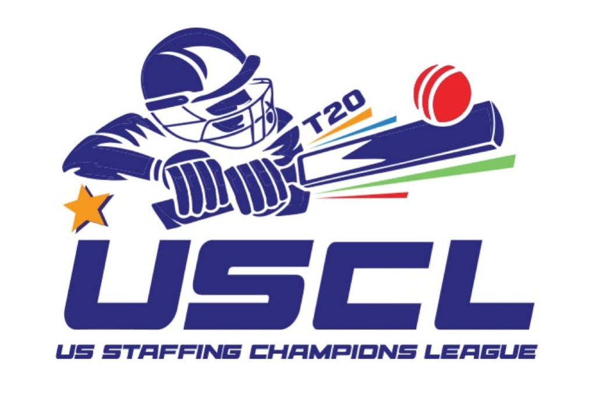
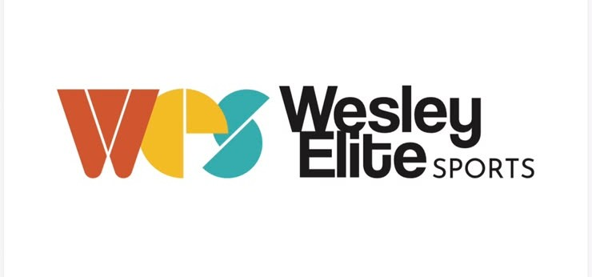

01FOUNDER

VIRGINIA VIKINGSBuilt for battle. United by the game. Virginia Vikings are ready to leave their mark on USCL T20.
Every ball is a battle. Every player is a warrior. Every match is a chance to make history.
Virginia Vikings bring passion, teamwork, and fearless cricket to the US Staffing Champions League T20. Backed by ProCorp Systems, we play with purpose—and we play to win.
MEET THE PEOPLE BEHIND THE ROAR →Leadership sets the tone.
Teamwork makes the roar.

01
04Twenty spots. One mission.
Every player matters.
These 20 player frames are ready for selected player photos, names, roles, and jersey numbers.
Posters. Highlights. Stories.
The roar lives on.
Results, standout performances, and moments that mattered.
Add a custom poster, match report, scorecard, or highlight video by updating site-data.js and publishing the site again. See README.md for simple instructions.
Virginia Vikings compete in USCL T20 — the US Staffing Champions League, a staffing-franchise cricket league organized by Wesley Elite Sports.


Virginia Vikings are owned by ProCorp Systems—accelerating growth on and off the pitch.